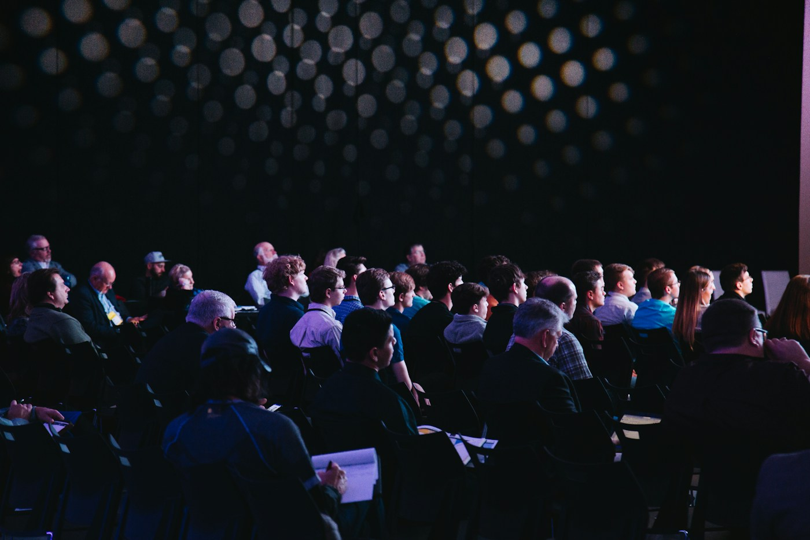

الفرصة في متناولك
نجمع معلومات الفعاليات في دليل واضح يساعدك على اختيار اللقاء المناسب لوقتك واهتمامك.
الجامعة تجربة نتشاركها. صُمّمت لمّة لتجمع الفعاليات والاهتمامات والأشخاص في مكان واحد.

في التعلّم الافتراضي قد تبعدنا المسافات، لكن الاهتمامات المشتركة تقرّبنا. من هنا جاءت فكرة لمّة: دليل بسيط يساعد طلاب الجامعة الافتراضية السورية على اكتشاف الأنشطة والتواصل مع مجتمعهم.
هذا الموقع مشروع تعليمي لمقرر BWP401، يقدّم تجربة متكاملة لدليل فعاليات باستخدام تقنيات الويب الأساسية. كل الفعاليات والصور والمواقع أمثلة توضيحية.
اكتشف ما يجمعنانجمع معلومات الفعاليات في دليل واضح يساعدك على اختيار اللقاء المناسب لوقتك واهتمامك.
تجربة جامعية تنمو بالمعرفة والصداقة والمشاركة، حضوريًا وعن بُعد.
نرحّب بالأفكار المتنوعة، ونسهّل الوصول إلى أنشطة ثقافية وفنية ورياضية وتقنية.
أعضاء فريق مشروع دليل فعاليات الجامعة الافتراضية · مقرر BWP401.
أرسل الفكرة عبر صفحة التواصل مع العنوان والتاريخ والمكان ووصف موجز. في النسخة التعليمية يُتحقق من النموذج محليًا فقط.
شاركنا فكرتك ↖